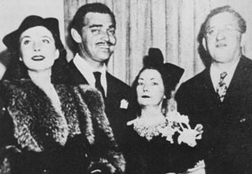
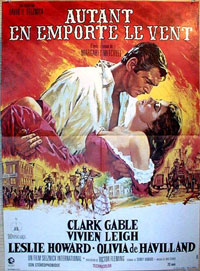
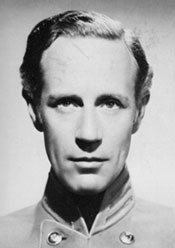

|
Atlanta, Georgia, December 15, 1939: If the South had won
the Civil War in a replay, Atlanta could not have been in a
more celebratory mood than on this night, the night of the
premiere of Gone With the Wind. Over seven hundred
thousand visitors had booked hotel rooms throughout the city
and in small towns as far as thirty miles away. Huge
searchlights in front of the Grand Theatre, the site of the
premiere, were so powerful that their beams scanning the sky
in lazy circles could be seen as far as Macon, fifty miles
away
The excitement had been building for weeks. The governor
of Georgia had proclaimed the day of the premiere a state
holiday and earlier in the week had waited at the airport,
with other dignitaries, to meet planes carrying Clark Gable
(who flew on the MGM plane, which had GONE WITH THE WIND
painted in huge letters on its side), Vivien Leigh and
|

(from left to right) Vivien
Leigh, Clark Gable, Margaret Mitchell, and David
O. Selznick at the premiere of Gone With the
Wind.
|
producer David O. Selznick (Leigh's plane was kept circling
Atlanta for forty-five minutes because the flowers the mayor
of Atlanta was to present her were late). Thousands of
citizens rented 1860s-style hoop skirts and suits for the
occasion. Dozens of local department stores proudly
displayed in their windows costumes from the movie, loaned
by the studio. The governors of seven states were in
attendance. Political notables such as W. Averell Harriman
and Herbert Hoover mingled with celebrities Billy Rose,
Carole Lombard, Laurence Olivier and a host of MGM stars.
At the Grand Theatre, there was chaos. The building's
entire front had been remade into a replica of Scarlett
O'Hara's plantation mansion, Tara, complete with white
columns. The twenty-five hundred tickets, usually fifty
cents but hiked to ten dollars for the premiere, had been
sold out for months. On this, the climactic night, scalpers
were getting more than two hundred dollars a ticket.
The stars arrived in a long parade of convertibles as
thousands of fans lining the streets cheered wildly.
Everyone connected with the film in a major way was in
Atlanta and in the parade except director Victor Fleming,
who was feuding with Selznick. British actress Vivien Leigh,
who played Scarlett, the everlasting symbol of Southern
womanhood, in fact knew very little about Southern cultural
traditions. As she rode along in her convertible, she kept
hearing bands play "Dixie." She turned to the man next to
her and gushingly told him that she thought it was a good
omen for the success of Gone With the Wind that
people were already playing its music.
The night before the premiere, the stars had appeared at
a junior League ball. (Margaret Mitchell did not attend
because the junior League had snubbed her years before.)
There were so many people who wanted to get in that a second
ball was held down the street in a hotel. At the ball, Clark
Gable danced with the daughter of the mayor of Atlanta and,
one reveler reported, caused a local debutante to faint when
he asked her to dance.
The jockeying for tickets to the premiere had gone on for
months. Feuds erupted at Macmillan, publisher of the novel,
when it was learned that the company was limited to six
tickets. The head of the Atlanta chapter of the Daughters of
the American Revolution became involved in a dispute with
producers over complimentary tickets. After listening to her
harangue at some length, an assistant producer snapped,
"Wrong war!"
Studio moguls pulled out all the stops, sending a team of
publicists to Atlanta to handle that opening and other
publicists to other cities to prepare their premieres.
Special programs were printed for the Atlanta opener.
Selznick, always a stickler for detail, warned the printers
not to make the program paper too crisp: he was afraid that
as the pages were turned during the movie the crackling
sound would drown out the dialogue. Also, knowing that huge
crowds of spectators would be present, he was nervous about
the publicity shots of the stars--the photos traditionally
sent out by the studios; he was worried lest people in the
crowds get into the background, and so he dispatched
photographers to Atlanta well in advance to photograph the
front of the theater, with its Tara facade, and had them
send the photos back to Hollywood. The stars were then
photographed alone, in Hollywood, and studio magicians
superimposed these pictures over the Atlanta photos so they
looked as though they had been shot at the premiere.
The audience in the Grand Theatre was hushed when Max
Steiner's lush theme started to play and the film began, but
the hush didn't last long. People wept at the scene in which
thousands of Confederate soldiers lie wounded in an Atlanta
square, roared their approval when Scarlett shoots a Yankee
soldier and clapped their hands and sang whenever any ragtag
band in the movie struck up "Dixie."
In retrospect, of course, it's clear that the movie could
not miss: it was based on a number one best-selling book, it
had a stellar cast and it was one of the first great
technicolor extravaganzas. However, in the beginning
Selznick had thought the movie a risky project. He had paid
a record amount of money for the book rights, and he knew
that production would be extremely expensive and that it
would take a long time to shoot. The film would also be
facing strong competition from the hundreds of other movies
released in 1939. He did not know whom to sign on as chief
screenwriter and was uncertain about his original choice for
director, George Cukor.
To insure his investment he borrowed box office champion
Clark Gable from MGM and agreed to pay his hefty salary of
forty-three hundred dollars a week. Everyone told him Gable
was perfect to play Rhett Butler and Hollywood columnists
were so certain of the match that, writing about the casting
of Gone With the Wind, some asked rhetorically in
their columns, "Who will play Clark Gable?"
Gable, ironically, had no faith in the film's prospects,
and did not want the part. "I didn't want [it] for money,
chalk or marbles," he said later. He had to be talked into
it. Then he had to be talked into crying on screen in the
scene where he believes Scarlett is going to die. He had
never cried before in a film, and he was certain it would
ruin his masculine image. But his tears not only did not
undermine his masculinity, they made him even more of a
superstar. One thing he was adamant about, however, was his
refusal to take speech lessons in order to speak with a
Southern accent. It turned out not to matter, and he came
out of the movie as the matinee idol of all time.
The most sensual scene of the film, of course, is when
Rhett picks up Scarlett against her will and carries her up
the enormous, wide, darkened staircase towards the bedroom.
It was considered one of the most erotic scenes of all
time--although some women complained that what he did was

Clark Gable and Vivien Leigh
in Gone With the Wind.
|
rape. Actually, Gable and Leigh couldn't get the scene right
and it had to be reshot twelve different times. Each time,
Gable had to carry the actress in his arms up that long
flight of stairs. After the final take, Gable was completely
drained physically and had to rest. He could not have made
it up the stairs one more time, much less raped anybody.
The search to find an actress to play Scarlett (she was
named Pansy O'Hara in the first draft of the book, but
someone wisely persuaded the author to change the name), a
public relations masterstroke, took two years. Just about
every top star in Hollywood, as well as hundreds of unknowns
from coast to coast, auditioned for the role. (A rumor
started, never completely quieted, that when Selznick
learned how much the production, plus Gable's salary, would
cost, he decided to cast unknowns as Scarlett and Melanie
just to save money.) No one was signed. Selznick searched
and his aides searched. They ran auditions in every major
American city and sent scouts to small ones. They looked
throughout the United States, Mexico and Canada. But always
the women were too old or too young, too heavy or too thin.
Finally, having given up, and under enormous pressure to
begin filming, Selznick decided to start shooting around the
star. He climbed to the top of a high wooden tower one night
in Hollywood to supervise the burning down of a studio set
that on film would be the burning of Atlanta. Hundreds of
people--cast, crew and firemen--stood around watching the
enormous conflagration, which could be seen as far away as
Santa Monica. At the very height of the blaze, as flames
leaped into the Los Angeles sky and the heat became intense,
Selznick heard the sound of feet climbing the ladder of the
tower behind him. This was followed by the familiar voice of
his brother Myron, an agent. The producer turned and,
squinting because of the heat from the fire, looked directly
across the platform at one of the most beautiful women he
had ever seen--Vivien Leigh. David, said his brother, "I'd
like you to meet Scarlett O'Hara."
Gone with the Wind became one of the most
successful movies of all time, earning over $60 million in
box office receipts (close to $1 billion in today's money),
and was seen by millions of Americans in its various
television showings. It was estimated that between its first
theater showing in 1939 and 1945 more than 120 million
Americans, or just about every adult in the country, saw it.
Many theaters ran it for a year; a number in the South had
ushers dress as Confederate officers and Southern belles.
There was such demand to see the movie that distributors
gave up their restrictions and permitted more than one
|

The Italian version of
the Gone With the Wind poster is an
artifact of the film's enormous worldwide
appeal.
|
first-run movie theater in a city to show it. In New York
City, the Empire, Ritz and Palace, all ornate first-run
houses, showcased it for twelve months. It ran for two years
in Atlanta. A movie house in London showed it for four
straight years. Demand for tickets was so great in some
towns that theaters doubled prices and some added a second
or third showing each day. In some markets, the movie was
yanked from houses after six months to build demand from
those who hadn't yet had a chance to see it, held in
Hollywood for a time, and then rereleased to a second wave
of ticket-buying madness. It was rereleased several times
over the years 1940-45. Each time it got new reviews that
helped to stimulate new box office records.
It also stirred up controversy with both Northern and
Southern commemorative groups. In the South, the search for
Scarlett caused an uproar. Several chapters of the Daughters
of the Confederacy threatened to boycott the film because an
English actress landed the role. Indignation grew so intense
that it spilled over onto the floor of the Daughters'
national convention. Peace finally came when the group's
president-general, Mrs. Walter LaMar, assured the ladies
that as a world traveler she had met many British women and
found them "most delightful.""
In the North, members of the Daughters of Union Veterans
complained that the film wrecked the reputation of General
Sherman, insinuated that all Union soldiers tried to rape
Southern women and misrepresented the story of the war. "It
is unfair that our boys and girls should be given such a
distorted view of what actually took place," stated a
resolution drafted by the group and read by a member at one
of their meetings.
GWTW broke other ground. Producer Selznick paid a
then-record $50,000 for the rights to Margaret Mitchell's
novel. It was the costliest movie made until that time, at
$4.25 million, and also the most lavish. Selznick shot over
450,000 feet of film in order to edit it down to a final
version of 19,980 feet. The producer had fifteen hundred
scene sketches drawn, ordered two hundred sets designed and
actually built ninety (including the old studio lot that he
burned). He hired a cast of more than twenty-four hundred
people; designers produced fifty-five hundred costumes.
Along with The Wizard of Oz, GWTW was one of the
handful of experimental color films of the later 1930s (only
ten were made in 1939) One major reason that Selznick spent
so lavishly on color was that Jock Whitney, one of
moviedom's biggest investors, and one of GWTW's
largest financial backers, had invested in some of the early
color movies Of 1937 and 1938, such as Nothing Sacred,
Tom Sawyer and A Star Is Born. Whitney was also a
major investor in the company that produced Technicolor film
and he pushed Selznick hard to make GWTW a guinea pig
for the new process." If Gone With the Wind had been
filmed in black-and-white, its impact, then and later, would
have been significantly less. It was a long movie, nearly
four hours, in an era of ninety-minute to two-hour features,
and, like The Birth of a Nation, it showed Hollywood
that long movies could succeed at the box office. The film
made Vivien Leigh a star, and Clark Gable a legend.
(Twenty-eight years later, in 1967, when the movie was
re-released, many audiences broke into sustained applause at
the point when he appears for the first time, at the foot of
the staircase at the Wilkes party A whole new generation of
young women swooned as their mothers had years before at
first sight of him.)"
Most critics enjoyed Gone With the Wind. But some,
like Lincoln Kirstein, in Film Magazine, saw its
historical flaws. He wrote: "History has rarely been told
with even an approximation of truth in Hollywood because the
few men in control there have no interest in the real forces
behind historical movements and the new forces that every
new epoch sets in motion. Gone With the Wind deserves
our attention because it is an overinflated example of the
usual false movie approach to history."
GWTW, like other silent and sound films about the
war, bolstered the four-pronged presentation of the
Plantation Myth that the Old South was a special place
ruined forever by history's lightning: 1) all white
Southerners were rich plantation owners and, in their
personal lives, well-educated, romantic cavaliers; 2) white
Southerners loved their slaves and their slaves loved them
and they all just wanted to be left alone; 3) the North
started the war, forcing the gentlemen of the South to fight
the Lost Cause for four long years, to lose in the end, but
lose gallantly; 4) the South was devastated by
Reconstruction--imposed by the federal government--and never
recovered. Gone With the Wind, seen by just about
every American in theaters and, later, on television, had
the power to reinforce these myths and turn them into
acceptable fact.
The first great distortion in the book and movie, carried
over from the silent-film era, was that all Southerners were
wealthy, lived on huge plantations and owned hundreds of
slaves (the Tarleton Twins alone owned 106). When Selznick's
people researched plantation homes in northern Georgia in
order to design Tara, they had to report back to him that

Producer David O. Selnick
in front of the Tara set.
|
they could not find one that was as large as Selznick
envisioned Tara and Twelve Oaks or one that had
white-columned porches. Selznick shrugged and told them to
design Tara as it appeared in the movie, anyway, and call it
an authentic re-creation. Once his set designers gave him
Tara (they painted the exterior of Twelve Oaks on a scrim),
Selznick used it as the backdrop for a society in which
everyone was rich and owned slaves. He was determined, like
so many before him, to re-create a Southland of mansions and
elegance, even if the one in GWTW never existed.
The fingerprints of The Birth of a Nation were all
over Gone With the Wind. Just as Birth opened
with scrolled wording telling viewers that the Southern
states constituted a separate country ("the Southland") with
separate cultural ways, living by its own rules, GWTW
opened with similar scrolled wording-backed up by that
gorgeous Steiner theme--informing viewers that there once
was a "land of cavaliers and cotton fields called the Old
South"; that there, "gallantry took its last bow"; that
"here was the last ever to be seen of Knights and their
ladies"; and that it was really "'a civilization' that was
now gone with the wind."
In this separate country with its separate rules live two
families, the Wilkeses and the O'Haras, who are presented in
the first few frames of the film as wealthy but benevolent,
good and decent people--very much like the lovable Cameron
family in Birth. All the trappings of strong family
life are shown: parents at home loving their children,
respect for their institutions, friendship between siblings,
family mealtime prayers and even pet dogs who romp on
Scarlett O'Hara's front porch (just as the Camerons' dogs
romp in Birth)." The Wilkeses and O'Haras, and the
other slaveholders in the movie's Old South, are good to
their slaves, who love them in return. The two families,
like the Camerons, are so personable that they became very
real to audiences. From the beginning of the film, viewers
are cheering for them and resentful of anyone who tries to
hurt them. (This opening scene of the likable family that
engages in detestable practices was used with similar
success in the opening wedding scene in The
Godfather.) "You find you know these people as
thoroughly as though you had lived with them for years,"
wrote Bosley Crowther in his review of GWTW in 1941.
Scene after scene shows reciprocal affection between
slaves and masters--the film's second major distortion. "You
must be gentle with darkies," Gerald O'Hara admonishes his
daughters. Scarlett's mother is seen helping sick slave
children. The irascible but likable Mammy sticks with the
family through the war, spurning freedom, just to help them
get through hard times. Big Sam is content. Even Prissy, who
knows nothing about birthing babies, stays.
Many of the loving slaves are depicted as idiots or
fools. Prissy's whining, witless character made any African
American watching the movie cringe. Malcolm X said that of
all the abuses of blacks in the film, the depiction of
Prissy hurt him the most. A poll of women who watched the
film showed approval for Scarlett's slapping of Prissy when
the girl lies about her ability to deliver babies. Although
the liberal Selznick had the word "nigger" cut out of the
film, in the book, characters repeatedly called each other
"nigger " and the house servants sneered at the "field
hands," whom they considered dumb. Southern city slaves
referred to slaves on cotton plantations as "country
niggers."
In the book, Melanie and Scarlett survive a kitchen fire
at Tara set by Yankee soldiers (naturally). Both are covered
in soot. Scarlett laughs at Melanie and tells her, "You look
like a nigger." Melanie laughs back. "And you look like the
end man in a minstrel show."
In the movie's opening scenes contented slaves are
picking cotton and driving wagons full of felled trees, and
other such scenes abound. At the Southland's balls, parties
and picnics, black servants lovingly prepare and serve food
and are pleased to take the reins of their masters' guests'
horses. Black girls gladly spend hours fanning the air to
keep it cool while their owners' daughters take an afternoon
beauty sleep. A servant braves pouring rain to chase and
kill a chicken for the 11 white folks' Christmas dinner.
Mammy and another servant mourn, misty-eyed, that Yankee
soldiers have stolen Tara's livestock. It is "a whole world
that wants only to be graceful and beautiful," as Melanie
Hamilton tells Ashley Wilkes, but meddling abolitionists
from the North destroy it all by going to war against it.
That is the third distortion in the film. Mitchell, and
then Selznick and his writers, quickly position the
Northerners as the aggressors at the Wilkes barbecue early
in the film, and the old formulation follows. Gerald O'Hara
acknowledges that the South fired the first shot when it
attacked Fort Sumter, but the movie immediately accuses
President Lincoln of starting the war by calling for
seventy-five thousand troops to put down the rebellion.
Someone shouts that one Southerner can lick twenty Yankees.
Someone else yells that gentlemen (South) can fight better
than rabble (North). Another says that the Southerners can
lick the Northerners in one, single battle. Rhett Butler
then jumps into the conversation to warn the Southerners
that the Yankees outnumber them and have a standing army and
more supplies and factories to make weapons and ammunition.
This immediately frames the Lost Cause for the audience,
setting up the Confederates as underdogs who must fight
gallantly even to stay on the field, much less win the war.
That stated, GWTW then proceeds to show how the
Lost Cause was defended for four long years in an unequal
struggle against the Union army. That is bitterly underlined
by Ashley Wilkes, home on Christmas leave, when he says,
"The Yankees keep coming and coming. There are always more."
Scene after scene reminds viewers of the South's hardships:
hundreds gather in an Atlanta street to get the lists of
dead and wounded after Gettysburg. In one of filmdom's most
vivid scenes, thousands of wounded troops lie moaning in a
large Atlanta square, a tattered Confederate flag flying
|

Leslie Howard as Ashley
Wilkes.
|
above as a stunned Scarlett walks among them. Atlanta
hospitals are filled with the dead and dying, all put there
by Yankees. Atlanta itself is burned to the ground by the
Yankees and the good people there are forced to evacuate
like rats. ("Yankees in Georgia!" wails Aunt Pittypat. "How
did they ever get in?") Tara and Twelve Oaks are razed by
the Yankees. Women like Melanie Wilkes have to turn over
their gold wedding rings to the Confederate army so they can
be used to buy supplies for the troops. Even Belle Watling,
the notorious madam, supports the cause ("I'm a Confederate
like everybody else.")
Gentle Southern women like Scarlett must turn into
murderers to prevent Yankee soldiers from raping them. The
threatened rape of Scarlett by a Union soldier at Tara,
symbolically the rape of the entire South by the U.S. Army,
is averted when Scarlett shoots the soldier. After killing
him, Scarlett mutters that he was probably a deserter,
suggesting that at heart all Yankees were cowards. Honest
and law-abiding citizens in Atlanta are turned into looters
when Atlanta is attacked, but they are not following their
own instincts. They loot, Rhett Butler insinuates, because
they must have a way to save themselves from the advancing
Union army.
In the end, the South is devastated by the war. With
vultures overhead, Scarlett and Melanie drag themselves back
to Tara, driving their carriage past dead Southern soldiers,
overturned wagons and burned-out Southern homes. Scarlett's
mother dies of typhoid fever she has contracted while caring
for the typhoid-ridden daughters of the Slattery family, the
local "poor white trash," as the good plantation women
always cared for those around them, black and white. Gerald
O'Hara, practically mad, breaks his neck in a riding
accident (in the novel he rides recklessly after being
ordered to take a loyalty oath to the Yankees so that he
could keep Tara, and in the film he rides after a
carpetbagger Scarlett has just denounced as a "Yankee
coward"). All of this has been caused by the Yankees. The
movie conveniently overlooks the devastation wrought by
Southern armies, such as the massacre of black soldiers at
Fort Pillow, in Tennessee; the torching of Chambersburg,
Pennsylvania; and the deaths of thousands of prisoners at
Andersonville. (The death camp at Andersonville was such a
touchy issue, seventy-five years after the war, that Ashley
Wilkes's imprisonment at Rock Island, a Union prison in
Illinois, mentioned in the novel, was snipped out of the
movie to avoid raising the Andersonville issue on the
Southern side.)
Southern reviewers grasped the many Plantation Myth
meanings of the film immediately and hoisted it on their
pens as Stonewall Jackson would have hoisted one of his
Virginia cavalry flags. "The Lost Cause will never be lost,"
wrote a critic for the Richmond News Leader, "as long
as there beats one heart which is pumped by one drop of
southern blood ... the real thing [history of the South] was
painted for us. We wondered how the men and women of the
South ever came out of that terrible tragedy alive or sane
... [the film] was a truly great and moving experience.
Of course, the true success of the movie lay not in the
continued advancement of the myth but in the riveting
character of Scarlett O'Hara, a fierce individualist who is
the ultimate survivor of a destroyed civilization. She is an
independent woman who survives everything to rebuild Tara
and then her own life in Atlanta, symbolic of the rebuilding
of the entire South and, for Depression audiences, the
United States in the 1930s. Scarlett is also a far more
complex character, and more believable, than any heroine of
the silent era or other 1930s Plantation Myth films. She
yearns for Ashley Wilkes until nearly the end of the movie,
when she finally realizes, too late, that the man she should
have loved is Rhett Butler, who desperately loved her. It
was Scarlett's soap opera story, full of spectacular sets
and scenes and vividly drawn characters, black and white,
and Clark Gable's dynamic, roguish Rhett, that made
GWTW succeed. Women loved it for Scarlett's
independence and Rhett's charms, men loved it for Rhett's
manliness and all loved it for its story of survival in a
wartorn world and the taut melodrama of the death of what
was presented as a gracious world in simpler times.
That is why Selznick, the Hollywood producer, had loved
the story, too, even if filming it meant taking a risk. He
saw the book as two interwoven stories, both highly
attractive--the survival of feisty Scarlett and her friends
in a war, and a love story. But he quickly realized that
what was a quintessentially Southern book could not be so
unequivocally a Southern movie. All the basic elements of
the runaway best-seller (it sold fifty thousand copies in
its first day in stores and was the number one best-seller
for nearly two years) were kept in the script, but much of
the book's vitriolic portrayal of Northerners was deleted,
and numerous anti-Northern references were cut out. The love
story between Scarlett and Rhett was highlighted in the
movie, and many of the nicely drawn but clearly Southern
characters were eliminated. Numerous carpetbaggers were
trimmed from the story, too. Although blacks were presented
in stereotypical ways, the novel's worst depictions of them
were removed from the film. One black calling another
"nigger" was eliminated, as was a scene where Prissy eats
"watermelon with great glee."
One of the biggest changes was the role of the Ku Klux
Klan. In the book, Ashley Wilkes and Scarlett's husband,
Frank Kennedy, are leaders of the KKK in Atlanta and lead a
raid to murder blacks in retribution for an attack on
Scarlett. Mitchell's most powerful defense of the Klan in
the novel, and a telling scene, has Melanie Wilkes, the
saintly Melanie, lying to federal officers to protect her
husband and others in the KKK. In the scene, Melanie's
sister India defines the role of Southern men and their
women, and of the men in the Klan in particular. She tells a
disbelieving Scarlett that her husband and Ashley are
Klansmen and then adds, defensively: "They are men, aren't
they? And white men and Southerners. You should have been
proud of him." In other words, men, Southern men, belong in
the KKK.
Mitchell, and many other Southerners, saw the Klan as
providing needed protection against blacks and white
agitators in the 1870s and in the 1930s, too. "One of the
earliest purposes of the Klan was to protect women and
children," she wrote. "Later, it was used to keep the
Negroes from voting eight or ten times at every election.
But it was used equally against the Carpetbaggers who had
the same bad habit where voting was concerned. Members of
the Klan knew that if unscrupulous or ignorant people were
permitted to hold office in the South their lives and
property would not be safe."
Selznick's fear, though, was that the Klan was undergoing
a strong resurgence just as GWTW was about to open,
and he despised the organization. The KKK had reportedly
murdered or maimed dozens of people, black and white,
throughout the country, North as well as South, in the
spring and summer of 1939. Klansmen burned crosses in front
of black homes and churches, as usual, but in the summer of
1939 they burned several as well in front of the homes of
white Jews and Catholics and in front of synagogues and
Catholic churches. Crosses were burned as far north as
Jersey City, New Jersey. Deputy sheriffs and police officers
in several Southern states publicly admitted to Klan
membership; one was even a deputy sheriff in Fulton County,
Georgia, where GWTW opened. According to Klan
Imperial Wizard Hiram Evans in congressional testimony, the
Klan even became involved in pressuring state transportation
agencies in the awarding of contracts to pro-Klan
contractors. By the time GWTW opened, KKK membership
had soared to over three hundred thousand. Selznick did not
want to help it increase further.
The Klan set up its Georgia headquarters on Peachtree
Street, where Mitchell lived and where she worked as a
reporter for the Atlanta Constitution, so she drove
past their offices just about every day (her black servant
refused to go with her when she was going to be around KKK
headquarters). She had no qualms about the Klan and in a
letter wrote: "I had not written anything about the Klan
which is not common knowledge to every southerner." The Klan
was just as much a presence in Southern life when the movie
came out as it was during Reconstruction.
Selznick did not want to romanticize the Klan, as
Griffith had done twenty-five years earlier. He had just
turned down an offer to remake Birth as a sprawling,
four-hour-long color epic, and he also knew the KKK would
have been box office poison in the North; so the Klan and
all of its robes were conveniently left on the cutting room
floor. It is also probable that the Jewish Selznick
remembered how Birth glamorized the old Klan, which harassed
blacks. He did not want to glamorize the new Klan, which
harassed Jews. "[I have] no desire to produce an anti-Negro
film. We ought to be careful that the Negroes come out
decidedly on the right side of the ledger," he told
screenwriter Sidney Howard. And he remarked to a friend that
inclusion of the KKK might make the movie "come out as
advertisements for society's intolerant groups..." Selznick
was careful not to talk publicly about leaving the Klan out
of the film beyond that statement. If Ashley and Kennedy had
stayed in the Klan, moreover, it would have completely
undermined the movie's portrayal of them as harmless
Southern victims.
That was just one of the several subtle but significant
shifts in the Plantation Myth in the film version of Gone
With the Wind. Eliminating the Klan removed vigilantism
from Southern makeup and undercut any thoughts that
Southerners, or anybody, should go outside the law for
justice. (Mitchell told friends that she had little to do
with the making of the movie, and there is no evidence that
she protested Selznick's view of the Klan.)
Selznick also gave the movie a more progressive look at
Reconstruction. At first, many historians agreed that
Reconstruction was unfair and harsh, but later experts, such
as Eric Foner, writing in the 1970s, suggested that it was
helpful and necessary. In the book Gone With the
Wind, there is only one view of Reconstruction: it was a
deliberate and aggressive campaign by Northerners to destroy
economically whatever Sherman and Grant's troops had not
destroyed militarily. In the movie, Selznick significantly
toned down the book's harsh portrait of all Northerners in
Reconstruction. It is not the federal government, soldiers,
or Northerners in general who are the villains, but only the
vile carpetbaggers, the overly eager businessmen who invade
the South as the war ends. A pair of Northern carpetbaggers
in a carriage refuse to give a lift to a dying Confederate
soldier being carried home by his friend. The two bedraggled
soldiers, covered in dirt and grime, are cursed out as
"Southern scum." Gerald O'Hara wails that only Yankee
carpetbaggers and scalawags (their Southern accomplices) now
have money. Well-dressed carpetbaggers tell newly freed
slaves that they'll be taken care of if they vote the way
the carpetbaggers tell them to. Big Sam, a freedman after
the end of the war, leaves Atlanta, disgusted with the
behavior of these Northern invaders, who are clearly defined
as not representing all Northerners.
There are numerous messages in the movie, some overt and
some subtle, to suggest that Reconstruction was necessary
and successful. One scene shows Atlanta being rebuilt so
that its people can move forward. It lasts only a few
seconds, a backdrop to Scarlett and Mammy walking down a
street, but it is effective. The same scene shows dozens of
U.S. Army soldiers, white and black, walking about,
intimidating no one. There is a preponderance of
unthreatening black soldiers. When, finally, Scarlett
decides to work with the Northerners to make her new lumber
business a success, Melanie argues that she is working with
the same people who have ruined their world. Scarlett snaps
that she will beat them at their own game. The inference is
that Scarlett understands, as all should have understood,
that cooperation between North and South would bring
reconciliation, economic success and the rebirth of the
South.
Selznick, although a prisoner of Hollywood's conventional
depiction of blacks as retainers and fools, certainly gave
them more character and presence than they had enjoyed in
any other movie to that point. Mammy clearly runs Tara and
the O'Haras feel genuine affection for her, and later, so
does Rhett Butler. GWTW also clearly is not part of
the "black beast" school of D. W. Griffith. Blacks are not
marauding thugs, murderers, rapists or dancing fools here.
Selznick took a huge step away from that idea in the scene
where Scarlett rides through Shantytown and is accosted by
two men, one white and one black. In the book, a freed black
slave grabs Scarlett and runs his hand over her breasts
while a white man grabs the horse. In the movie, a white man
tries to grab her while a black grabs the horse. It is a
small scene, a swift moment in time, but it signifies a
departure from the view of blacks promulgated in previous
films.
Although the movie extols Southern manhood and female
virtue and constantly shows the South as victim, the
enemy--the North--is strangely missing. Somebody is clearly
killing Confederate soldiers, somebody has won the battle of
Gettysburg and somebody has fired all those shells into
downtown Atlanta, but viewers never actually see the Union
army doing anything. The only bluecoats who appear during
the war are a few deserters, like the one Scarlett shoots.
The army does not become a presence until Reconstruction,
and even then its officers are portrayed as understanding.
(Ward Bond, as the officer looking for Ashley, Rhett and the
others one night when they stumble home pretending to be
drunk, obviously knows that something is going on but
chooses to do nothing.) The omission was a productive
restructuring of the old lore and a new direction for Civil
War films, towards an even fuller reunification.
Selznick was also determined not to star Southern actors
in the movie. He went after Gable and deliberately cast
British actor Leslie Howard (who, like Gable, thought the
movie would be a box office disaster) as Ashley Wilkes.
Hattie McDaniel, who played Mammy, was from the Midwest
(Margaret Mitchell lobbied hard, but unsuccessfully, to have
Eleanor Roosevelt's White House maid play Mammy). Howard and
Leigh not only gave GWTW a more neutral look, but, as
the crafty Selznick knew, guaranteed good box office for the
film when it was released in England and then in Europe.
A number of films with Civil War-era themes had preceded
Gone With the Wind in the 1930s: Steamboat Round
the Bend, Dixiana, Jezebel, So Red the Rose, Mississippi,
The Texan, The Vanishing Virginian, The Little Colonel, The
Littlest Rebel, Cotton Pickin' Days, My Old Kentucky Home,
Dixie Days, Hearts in Dixie, Mississippi Gambler and
Showboat. Even the Three Stooges starred in their own
Civil War film, Uncivil Warriors. Except for the
highly successful Shirley Temple films The Littlest
Rebel and The Little Colonel, however, most of
these did only marginal business at the box office.
Nonetheless, producers continued to believe that Civil War
films had an audience.
These films developed an even more romantic and
traditional view of the South than the Civil War silents.
Southern plantation life is described nicely by Julie in
Jezebel when she says to Pres, whom she wants to stay
in the South: "Can you hear them? The night noises? The
mockingbird and the magnolia? See the moss hanging in the
moonlight. You can fairly taste the night, can't you? You're
part of it, Pres, and it's part of you." The South is always
positioned as a separate country in 1930s films.
It was a country, too, that filmmakers defined as
different from other parts of America. "Its [film]
iconography includes mint juleps, stately mansions with
white columned porticos, landscaped lawns and gardens, and
fields of cotton in which contented darkies labor. This
environment connotes an agrarian economy and patrician way
of life. Additional associations are the cavalier and belle,
genteel customs, the code of chivalry, leisure, hospitality
and faithful slaves," wrote critic Ida Jeter about the 1930s
Civil War films. W J. Cash, writing about all Civil War
movies in that era, said that they were "stage pieces out of
the nineteenth century."
By the 1930s, the role of blacks in films had become so
familiar to audiences that blacks' demeaned and/or minimal
status was as much a staple of American movies as the
cavalry charge in the westerns, the hooker with the heart of
gold, the pie-in-the-face routine of slapstick comedies and
the Our Gang kids' clubhouse. After the black and
white-liberal protests over the depiction of blacks in
The Birth of a Nation, Hollywood producers were
afraid to portray blacks in an unflattering light--or any
light. None wanted controversy that might make the
newspapers. To avoid any disputes over blacks they simply

Hattie McDaniel won an
Academy Award for playing the extremely
stereotypical character Mammy.
|
took their scissors and snipped them out of films, much as
America snipped them out of daily life. Hollywood, burned
badly by projecting its image of the "black beast" in 1915,
would not touch the black man again in a substantial way for
nearly fifty years. That retreat denied audiences a chance
to view any meaningful interpretations of black life or
realistic American life on the screen. After 1915, the only
roles black actors could win were as butlers, servants,
laborers, chauffeurs or waiters. The only way talented
blacks could get into movies was to shuffle through films as
Sambos or Mammies. Bill "Bojangles" Robinson got into some
Shirley Temple movies and some tap-dancing duos, such as the
Nicholas Brothers, and singers, such as Dorothy Dandridge,
appeared in movies as nightclub acts. A few mainstream films
about black life in the South, such as Hallelujah! in
1929,were made by Hollywood studios, but they were banned
from many movie houses in the Southern states by local
censorship boards.
Many of the actors portraying blacks in films continued
to be whites working in blackface makeup, which demeaned
blacks. As late as 1942, actors wore blackface in the Bing
Crosby hit Holiday Inn (which introduced the classic
song "White Christmas"). As one striking young blonde has
her face blacked, she tells Crosby that she's always seen
herself as pretty, and now look what she looks like (black).
In effect, blacks were written out of movies.
Previously so recognizable in literature and light
theater, the black character also came to be conveniently
and repeatedly present in the new medium, film. And the more
often the Negro persona was used, the more often the black's
lowly status was confirmed. The South in its treatment of
the Negro became not only more understandable but even
forgivable , wrote Edward Campbell in 1980 in The
Celluloid South. A few years earlier, Daniel Leab had
observed that "In the main, the black man on screen [in the
1930s] continued to be presented as emasculated, easily
frightened, semiliterate, while the black women were shown
as fat, excessively jolly menials.
Paramount, which produced MississIppi, starring
Bing Crosby, urged theater owners to hire blacks to sit on
bales of hay in the theater lobby and play Southern tunes on
a banjo. Theaters all over America featured posters
showcasing the grinning Five Cabin Kids, black children who
performed in the movie. The studio referred to them
alternately as "darkie" children, "those Ethiopian
quintuplets" and "most entertaining bits of chocolate
sweetness."
Many of these films used the same plot device that was so
effective in The Birth of a Nation: make the
slaveholders lovable so that audiences embrace them and
cheer for them. It worked. In Jezebel, Pres, played
by Henry Fonda, spends much of the movie acting kindly
towards the black slaves serving as butlers and maids in
Jezebel's New Orleans mansion and on her country plantation,
Halcyon. Finally, to show how much he loves them, be invites
"Uncle Cato," the friendliest slave, to have a mint julep
with him. Cato, who knows his place, tells him that it would
not be proper for him to be seen drinking with a white man,
but, since they are such great friends, he will have the
drink-but down it inside a closet. In The Vanishing
Virginian (1941), Leigh Whipple plays a dying slave who
asks to be returned to the old plantation, where he had
spent most of his life with his beloved owner, so that he
can be buried under the old magnolia trees near his familiar
cotton fields."
Journalists and critics were spoon-fed this theme in
press releases. A PR blurb for one of the Civil War movies
of the 1930s described it, typically, as "...the story of a
proud plantation owner and his family when war clouds
gather, precipitating a conflict that engulfs a peace loving
people. The publicity easily influenced critics, who looked
for the message and found it. Writing about a slaveholding
family in a film, one critic concluded that they "treated
their slaves humanely and deserved the affection portrayed
in the film.
Press agents for these films worked with the United
Daughters of the Confederacy to stage world premieres in
Southern cities. The movie company would send the director
and stars to the premiere to garner local publicity, and the
UDC worked to turn out a huge crowd for the premiere and the
film's run in that city, building the box office with its
mailing list of sixty thousand patriotic, dues-paying
members and, incidentally, gilding the Plantation Myth image
at the same time. One clever press agent came up with the
idea of world premieres in the state capitals of each of the
eleven original Confederate states. Each premiere was hosted
by that state's UDC leaders, all of whom got a chance to
meet the movie's stars, get autographs and have a picture
taken with them.
The studio publicity departments promoted these 1930s
Civil War movies as historically accurate, and journalists
and critics believed them. "Theatrical tradition, in its
various manifestations in the past, via printed word, stage
and screen, has popularized ... Dixie gallantry," wrote a
critic in Variety in 1935. One of the reasons the life
presented in Civil War movies seemed authentic to so many
was that by the late 1930s the Southern view and the general
American view of slavery and contemporary blacks had
changed. History books written in the 1920s ignored race as
the most important factor in Southern history and instead
said that factor was the economy. The rampaging black rapist
had been ignored since the early 1920s and dismissed by
historians, who were now arguing that blacks were pretty
much invisible in the South, aimless children who did not
have to be feared.
Black actors were seen as incompetent, as incapable of
good performances-as illustrated by this studio press
release: "The director [King Vidor] holds the opinion that
the colored race is the most difficult of all people to
handle as a group in the making of motion pictures.
Fundamentally, living only for the joy they get out of life,
they are inclined to laugh at serious things and this native
comedy sometimes is difficult to overcome when sheer drama
is necessary.
Although few in number, filmmakers who did rely on
historians then pushed any and all black characters in Civil
War films deep into the background scenes of their films, as
historians did in their texts.
William Boehnel, a reviewer for the Brooklyn
Eagle, notorious for his sharp-edged reviews, said about
So Red the Rose: "It is a one sided picture, with the
northern forces being made out as uncouth killers and the
southerners-military and civilian alike-presented as the
[essence] of self sacrifice and good breeding."
Beverly Hills, a pseudonymous critic for Liberty
magazine, wrote about So Red the Rose and Civil War
films in general in 1935. She realized how movies had
influenced Americans' view of history. "The
background--crooning plantation slaves, mint julep drinking
gentlemen and elegant young ladies--is painted through the
misty kindliness of time. Perhaps this isn't the South as it
actually was, but it's a charming picture of how most of us
imagine it."
So Red the Rose, released in 1935, based on
Southern writer Stark Young's best-selling book (Margaret
Mitchell told Young she thought his book was "marvelous"),
was one of the most egregiously distorted films about the
lives of slaves. One of the ways in which white writers and
directors strove to make Civil War movies "authentic" was to
insist on slave dialect in scripts. In So Red the
Rose, the lines of dialect the black actors were given
belittled them and made them seem a race of children. When a
cannonball explodes on the plantation, a black kitchen slave
shouts: "A message from Abraham Lincoln! Dat's what dat is!
Abraham Lincoln done sent us a cannon ball to tell us he
ain't far away!"
Later on in the film, the unruly blacks decide to revolt.
Their leader, Cato, tells them to take all the livestock,
and his plan is to eventually seize the plantation manor
house itself. "It all belongs to us! We're the Kings! Marse
Lincoln has given us de land. He has given us de houses. No
more plowing ... no more chopping wood. Just sittin' in the
sun!"
Newspaper critics quickly grasped, and accepted, the
movie's presentation of a decent and controlled white South
contrasted with its unstable black slaves. One critic wrote
that the Negroes rioted in the movies only because the white
man (the civilized race) was not around.
Writing about So Red the Rose, Arthur Draper said
that if it was successful , it will be at the cost once
again of provoking even sharper racial lines than exist in
these states at the present time, of provoking an even
greater hatred by the whites for the negroes, of breaking
the solidarity between workers of all races that is today
beginning to change the Old South.
But Hollywood executives saw it another way: failure.
So Red the Rose, despite being based on a best-seller
and being given a cast of Hollywood stars and substantial
publicity, did not do well at the box office. This sent a
warning signal to the offices of David O. Selznick. He had
paid Margaret Mitchell a large amount of money for the
rights to Gone With the Wind, and he could not afford
a similar box office flop. Perhaps because of Paramount's
So Red the Rose, he dropped an initial idea to employ
(at Mitchell's insistence) singing black field hands, and
told writers to develop solid planter-slave relationships,
cut out the word "nigger" and eliminate the KKK from the
script. He was hopeful that Mitchell's book would turn out
much better on the screen than Stark Young's.
In her novel, Margaret Mitchell spent dozens of pages
building up the idea of a gentle Old South populated by kind
planters and slaves who loved them. She wrote about the
shelling and burning of Atlanta, and its evacuation by the
populace, at great length, drawing a heart-stopping picture
of a great city turned into rubble by Sherman's army. Again
and again she showed the Union Army treating Southerners
with disdain. In the book, Tara is raided twice by the Union
Army and just about everything the O'Haras own is stolen.
Mitchell explained, through characters not used in the film,
why the poor farmers wisely allied themselves with the rich
plantation owners. They were certain that if they worked
hard they, too, could own slaves, buy large plantations and
become rich.
She wrote scathing descriptions of Reconstruction, many
of which seemed taken directly out of The Birth of a
Nation, to show how the South was pillaged and ruined by
carpetbaggers and recently freed slaves. She dredged up
every political, cultural and social argument she could
think of to show how the Yankees had destroyed the South.
She even charged that former mistresses of plantations had
to wear rags while the wives of teachers from the North who
were sent south to educate the former slaves wore the latest
fashions.
Into all of these scenes, Mitchell wrote the feelings
that Selznick captured on camera--those of a defeated but
noble people who with great dignity try to get on in a world
wrecked by Northerners for no good reason except to free
their friends the slaves, who then go about behaving badly.
"They were crushed and hopeless, citizens of conquered
provinces," Mitchell wrote of the Southerners. "They were
looking on the state they loved, seeing it trampled by the
enemy, rascals, making a mock of the law, their former
slaves a menace, their men disenfranchised, their women
insulted."
No film script could capture all the drama and nuance of
Mitchell's novel, but the writers for GWTW came
close. They gave theatergoers a condensed yet forceful
interpretation of the book and, in such a powerful medium,
thus nailed down most of the legend.
It wasn't that Margaret Mitchell wanted to nostalgically
glorify the Old South in Gone With the Wind--it was
that she could not help doing so. Her entire background
suggests that any book she would have written about the
Civil War era would turn out to be based on the Southern
view of the Old South, slavery, the war, Reconstruction and
the KKK. Everything in her background, from stories she
heard as a little girl to the books she chose to read, led
her to write Gone With the Wind exactly the way she
did--giving many Americans a distinctly Southern and
distinctly mythologized view of the Civil War.
Margaret Mitchell was the daughter of a middle-class
lawyer whose family had lived in Atlanta for nearly a
hundred years. The Mitchell family refused to flee the city
when it was bombarded by Sherman's army in 1864, and offered
their home as a hospital for wounded Confederate troops. Her
great-aunts were marvelous storytellers who imbued Margaret
with their own version of the Old South and slavery.
She grew up in a neighborhood many of whose residents had
lived through the Civil War and Reconstruction (they were
then in their late fifties and sixties) who filled her young
ears with long, winding oral histories of their lives during

Margaret Mitchell.
|
that period. They complained about the deprivations of life
in Atlanta during the war, the shelling by Sherman's army
and the torching of the city. They went over in great detail
the strategies of the Southern armies. When she was five
years old, the Confederate veterans who lived in the
neighborhood took her horseback-riding and, along the way,
continually built up the lore of the Old South, the South
they wanted the next generation to remember. That same year
Mitchell, with others, hid under furniture in her home as an
ugly race riot consumed Atlanta.
As a child, Margaret was taken to parades commemorating
Atlanta's Confederate dead and was taught Civil War poems
and songs (her favorite was "I'm a Good Old Rebel and That's
What I Am!"). Relatives told her all they knew about the
Civil War, explaining in great detail how a perfectly
successful world of agrarian farmers was wrecked by the
reckless Yankee abolitionists with their wrong-head view of
slavery. She was regaled with long biographical accounts of
Southern Civil War-era heroes such as Jefferson Davis,
Robert E. Lee, Joe Johnston, Stonewall Jackson and Georgia's
own Howell Cobb. She was told about Pickett's glorious
charge at Gettysburg, the defense of Petersburg, Grant's
inability to beat Lee at either Cold Harbor or Spotsylvania,
the valor of the defenders of Vicksburg, the Confederate
rout of the federals at Bull Run and Lee's gallant stand at
Antietam. On Sunday afternoons, when she visited some
relatives who were veterans, she thrilled in putting her
thumbs into the bullet holes in the skull of a dead
Confederate soldier.
Mitchell often reminisced to friends about where the
premise of Gone With the Wind was born and explained
how her mother took her towards Jonesboro-"the road to
Tara"-and showed her the old ruins of houses where, she
said, "fine and wealthy people had once lived." She told her
that some of the ruins dated from Sherman's visit. "And she
talked about the world these people had lived in, such a
secure world, and how it had exploded beneath them," she
wrote. She joked to friends later that "I heard everything
in the world except that the Confederates lost the war."
As a child, she was also greatly influenced by the books
of Southern writers, such as Thomas Nelson Page, whose
syrupy Old South/cavalier novels sold so well throughout the
South in the late nineteenth century. The works of Thomas
Dixon had a particularly strong impact on her; she saw
The Birth of a Nation when she was fifteen and read
The Clansman, The Leopard's Spots and The
Traitor, all anti-black, and enjoyed them." I was
practically raised on your books, she told Dixon. "And love
them very much." She and her childhood friends staged their
own play based on The Traitor, playing Klansmen. In
it they staged the lynching of a man, a role taken by little
Margaret.
As a Southerner, Mitchell found it natural to turn to the
past for heroes. She began writing Gone With the Wind
in 1926, in the middle of another revival of the Lost Cause
both North and South. In a conciliatory and surprising move,
the American Bar Association published a heartwarming
tribute to Robert E. Lee in 1924. That same year, with much
pomp, Congress authorized a commemorative coin with Lee and
Stonewall Jackson on it. One year later, Congress voted
funds to fully restore Lee's Virginia mansion to its prewar
splendor. In 1928, President Calvin Coolidge sent the U.S.
Marine Corps band to entertain crowds gathered at several
national reunions of Confederate veterans groups. In 1930,
Congress voted funds to permit the placing of headstones on
the graves of all Confederate veterans. The commemorative
trend showed up in publishing, too. In the late nineteenth
and early twentieth centuries there were many historical
novels about heroic Confederate figures. Major nonfiction
works about Southern heroes appeared as well. The 1920s and
early 1930s also saw dozens of flattering books about
Jefferson Davis, Robert E. Lee and other luminaries of the
Confederacy Mitchell was certainly influenced by this
resurgence of interest.
Southerners, of course, never fully recovered financially
from the Civil War and struggled from generation to
generation in a weak economy. They had been suffering
economic woes for more than six decades when the Depression,
following the stock market crash of 1929, hit the nation.
What they wrote during that time about Southern leaders
helped readers get through their troubles. "Heroic images
can direct national action, overriding ... negative
circumstances and returning the people to its sense of
wholeness and identity," writes literary critic Michael
Kreyling.
Margaret Mitchell saw herself as an Atlantan writing
history about her beloved city and much-maligned South, with
the mission of trying as hard as she could to defend the
South against what she saw as historical inaccuracies about
slavery in the nineteenth century and segregation in the
twentieth. Mitchell used the personalities of people she
knew, or composite personalities, for her characters and
then started to sketch her story. (Fearful of libel suits,
she always denied that the characters were based on real
people.) She then plunged into historical research in order
to place her characters into the middle of the Civil War and
Reconstruction in the Atlanta area. She read many different
histories of Georgia, the Old South and the Civil War,
including works on the siege of Vicksburg, the battle of
Gettysburg, the fighting at Chickamauga and the assault on
Atlanta. She clipped dozens of newspaper articles about the
war and read old newspapers in libraries. Her research, she
said, was voluminous. Since she had checked all of these
details, her novel had to be historically accurate, she told
friends.
Mitchell, of course, made the same mistake as do so many
novelists, screenwriters and directors: they accurately
describe the thin tree in front of them and completely
distort the forest around it. Director King Vidor made the
same claim about his Civil War film So Red the Rose.
He insisted on authentic detail throughout the film (the
effort included an exasperating search for drawings or
photos of silver mint julep cups). Yet he, like Victor
Fleming in Gone With the Wind, would produce a
hopelessly distorted historical drama that he assumed was
accurate because the soldiers' rifles looked right. This was
a common practice in the making of westerns as well. Writers
and directors would go to great lengths to make certain the
guns and buggies they used were authentic re-creations,
ignoring the way in which the film depicted Indians.
In all of the press releases, souvenir books and programs
for Gone With the Wind, the producers stressed the
historical accuracy of the book and the movie. The writer of
the souvenir book assured viewers that Mitchell had checked
"thousands of historical statements for accuracy." But just
about everything Mitchell had read had been written by a
Southern author or reporter. There was little Northern
influence in any of the books or magazine and newspaper
articles she used as her references. Many of the works she
accepted as accurate were, in fact, products of the
moonlight-and-magnolias school of late-nineteenth-century
history, the books of William Dunning, James Rhodes and
others who trumpeted the virtues of the Old South.
In a 1942 letter, Mitchell recounted with great
satisfaction her search for weather information related to
Sherman's campaign from Tennessee into Georgia in 1864.
Unable to find reliable information from history books, she
used a turn-of-the-century novel, Cease Firing, by
Mary Johnston, one of the pro-Southern writers she read as a
child. There, in Johnston's novel, she found what she wanted
and put it into Gone With the Wind. Fiction, for
Mitchell, was fact.
In relying on novels about the Civil War she was relying
on writers with distinctly proslavery views (one of her
heroes, Page, wrote of poor whites in the South that they
"worked for less than the wage of the slave without any of
his incidental compensation"). She was assuming that the
novelists had found the factual data that eluded her and
used it. Often, the data were not factual. Critics who have
studied romantic sagas about the Civil War by late
-nineteenth-century Southern novelists have said they often
made up their data. For example, John Esten Cooke, who wrote
Surry of Eagle's Nest, a novel Mitchell claimed was
one of her favorites, was unable to find the romance and
glamour he wanted in his research, so he made it up. "He
constructed literary models of people as toy soldiers,"
according to literary critic J. V. Ridgely.
At the time both of Gone With the Wind's
publication and of the film's release, there was some public
criticism of Mitchell's historical inaccuracy. But Mitchell
discounted this criticism because it came mainly from the
Communist Daily Worker and black newspapers, which
she said had little credibility. There was very little
criticism from the mainstream press. The movie, then, was
seen by critics, journalists and the filmgoing public as an
accurate historical version of events in Clayton County,
Georgia, in the 1860s.
Years later, when Richard Harwell gained permission from
the Mitchell family to publish a book of the author's
letters, her private correspondence told a very different
story. There were actually many complaints about Mitchell's
accuracy in her depiction of the South, particularly of
blacks, and from very reputable sources. These were never
made public. One of the groups most critical of the history
in Gone With the Wind was the Society for Correct
Civil War Information, in Evanston, Illinois, run by writer
and civil rights advocate Lucy Shelton Stewart. Stewart was
joined by an army of historical nitpickers who found
inaccuracies throughout the book: Mitchell had an opera
staged in the wrong year, she had armies charging in the
wrong directions, she stated, falsely, that federal soldiers
looted Southern cemeteries, and so on.
Mitchell came under fire from a number of historians who
wrote to inform her that she had made numerous historical
errors in reporting the war, the most egregious of which was
that General James Longstreet disobeyed orders from Robert
E. Lee at Gettysburg. Mitchell defended herself by sending
critics a list of history books she had used for
information, and in so doing actually exposed the weakness
of her research--most of them were local history texts with
a regional or political bias. Some were books by local
historians, such as Georgia: Land and People, by
Frances Letcher Mitchell; History of the State of Georgia
from 1850 to 1881, by I. W Avery; Reconstruction in
Georgia, by Atlanta's C. Mildred Thompson; Atlanta
and Its Builders, by Thomas Martin; and The History
of Georgia, by Clark Howell. Some were heavily
subjective memoirs by Southern generals, such as Advance
and Retreat, by General John Bell Hood; Narrative of
Military Operations, by General Joe Johnston; and
Reminiscences,by General John Gordon. Others included
Southern diaries, foremost among them Life in Dixie
During the War, a tearjerker with a strongly partisan
Georgian view by Mary A. H. Gay, of Atlanta.
Mitchell argued that her information had to be right
because, in addition to books, she had oral histories,
eyewitness accounts from Confederate soldiers and even from
survivors of the siege at Atlanta. She chose, of course, to
ignore the personal biases of these witnesses, their strong
desire to enshrine the Stars and Bars in Southern memory.
Her letters showed, too, that from the start she was
determined to defend the South against seventy-five years of
attack. In one letter, she sums up her view on the Civil
War: "We wuz robbed."
She was exceedingly defensive in the face of any
criticism, particularly any accusations that she was a
mouthpiece for segregation ("my book was not interested in
propaganda"), and became more defensive as the critical
letters rolled in. She bristled at any attacks on her racism
in the book or, later, the racism of the movie. She said
these charges by African Americans were not true and were
trumped up by people she referred to as "professional
Negroes," or by Communists.
Finally, she admitted that Gone With the Wind was
the Southern response to Uncle Tom's Cabin. She told
one correspondent: "It makes me very happy to know that
Gone With the Wind is helping refute the impression
of the South which people abroad gained from Uncle Tom's
Cabin.
She never wavered in her defense of the historical
research or outlook of Gone With the Wind. "The
history in my tale was as waterproof and tight as ten years
of study and a lifetime of listening to participants would
make it," she argued.
It was not.
Source: Bruce Chadwick in The Reel Civil War: Mythmaking in American Film
(New York: Knopf, 2001), 183-199.
|